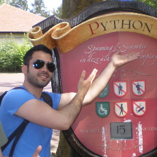
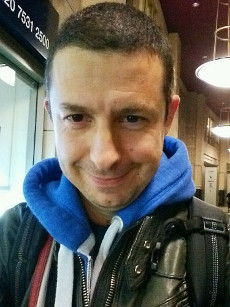

Hi there! My name is Álex. I am an IT guy with passion on development and nowadays in infrastructure as well since Docker, Kubernetes and others happened.
On my day to day job I work as software architect for jobandtalent.com. I came to work here (Madrid) in October 2015 after expending some years in London (UK) and in Groningen (NL).

My name is Ivan. I consider myself a developer who swims the chopy waters of DevOps. Kubernetes and containers are my daily Jam. I love APIs, and I do not care about languages anymore. I do Java, Python, Go and maybe Javascript in a daily basis.
I like to make stuff, from furniture for children to lamps or anything with wheels that can be pushed, dragged or propulsed.
Currently working as a devops engineer at the UK Home Office.
k8s.uk is made with by @agonzalezro and @ipedrazas